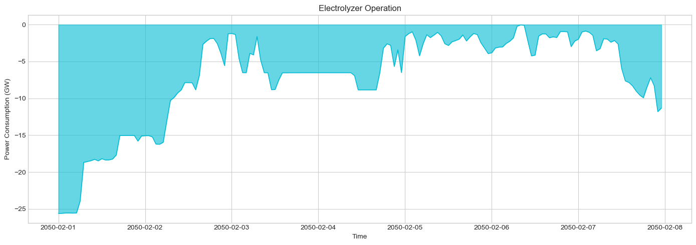
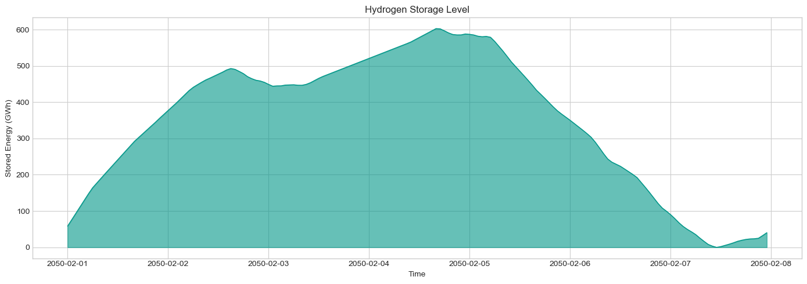

Hydrogen Systems#
This tutorial covers hydrogen integration in PyPSA-GB, including electrolysis, storage, and hydrogen-to-power.
What You’ll Learn#
Hydrogen system components
Electrolysis operation patterns
Hydrogen storage dynamics
Hydrogen-to-power generation
System integration and flexibility
1. Setup#
[1]:
import pypsa
import pandas as pd
import numpy as np
import matplotlib.pyplot as plt
import warnings
import folium
from pyproj import Transformer
warnings.filterwarnings('ignore')
plt.style.use('seaborn-v0_8-whitegrid')
plt.rcParams['figure.figsize'] = [12, 6]
plt.rcParams['figure.dpi'] = 100
colors = {
'electrolysis': '#00BCD4', 'hydrogen_storage': '#009688', 'H2_CCGT': '#8BC34A',
'H2_turbine': '#CDDC39', 'fuel_cell': '#4CAF50', 'hydrogen': '#26A69A'
}
print(f"PyPSA version: {pypsa.__version__}")
PyPSA version: 1.0.7
2. Load Network#
[2]:
# Load a future scenario with hydrogen
n = pypsa.Network("../../../resources/network/EE50_clustered_solved.nc")
print(f"Network loaded")
print(f" Snapshots: {len(n.snapshots)}")
print(f" Buses: {len(n.buses)}")
print(f" Links: {len(n.links)}")
print(f" Stores: {len(n.stores)}")
INFO:pypsa.network.io:Imported network 'EE50_clustered (Clustered)' has buses, carriers, generators, lines, links, loads, storage_units, stores, sub_networks
Network loaded
Snapshots: 168
Buses: 110
Links: 193
Stores: 1
3. Hydrogen System Components#
The hydrogen system typically includes:
Electrolyzers: Convert electricity to hydrogen (power-to-gas)
Hydrogen Storage: Store hydrogen (underground caverns, tanks)
H2 Turbines/Fuel Cells: Convert hydrogen back to electricity
Hydrogen Buses: Represent the hydrogen “network”
[3]:
from IPython.display import display
# Identify hydrogen components (robust detection)
print("=== Hydrogen System Components (robust detection) ===")
# Patterns
pat_elec = r'electrolys|electrolyser|electrolysis|p2g|power_to_gas'
pat_h2 = r'h2|hydrogen|fuel.*cell|h2.*power|hydrogen.*power|H2_CCGT|H2_turbine|fuel_cell'
# Hydrogen buses (by carrier or index)
h2_buses = n.buses[
n.buses.carrier.str.contains('H2|hydrogen', case=False, na=False) |
n.buses.index.str.contains(pat_h2, case=False, na=False)
]
print(f"\nHydrogen Buses: {len(h2_buses)}")
if len(h2_buses):
display(h2_buses.head(5))
# Electrolyzers (links by carrier or index)
electrolyzers = n.links[
n.links.carrier.str.contains(pat_elec, case=False, na=False) |
n.links.index.str.contains(pat_elec, case=False, na=False)
]
print(f"Electrolyzers: {len(electrolyzers)}")
if len(electrolyzers):
display(electrolyzers[['carrier', 'bus0', 'bus1', 'p_nom']].head(10))
# H2 links (links by carrier or index)
h2_power_links = n.links[
n.links.carrier.str.contains(pat_h2, case=False, na=False) |
n.links.index.str.contains(pat_h2, case=False, na=False)
]
print(f"H2-to-Power Links: {len(h2_power_links)}")
if len(h2_power_links):
display(h2_power_links[['carrier', 'bus0', 'bus1', 'p_nom']].head(10))
# Hydrogen storage (stores by carrier or index)
h2_stores = n.stores[
n.stores.carrier.str.contains('H2|hydrogen', case=False, na=False) |
n.stores.index.str.contains(pat_h2, case=False, na=False)
]
print(f"Hydrogen Stores: {len(h2_stores)}")
if len(h2_stores):
display(h2_stores[['carrier', 'bus', 'e_nom']].head(10))
# Fallback: show top carriers for manual inspection if none found
if (len(h2_power_links) == 0 and len(h2_generators) == 0 and len(electrolyzers) == 0 and len(h2_stores) == 0):
print("\nNo obvious hydrogen components detected. Top link/generator/store carriers (for manual inspection):")
print("\nTop link carriers:")
print(n.links['carrier'].value_counts().head(20))
print("\nTop generator carriers:")
print(n.generators['carrier'].value_counts().head(20))
print("\nTop store carriers:")
print(n.stores['carrier'].value_counts().head(20))
=== Hydrogen System Components (robust detection) ===
Hydrogen Buses: 1
| v_nom | type | x | y | carrier | unit | location | v_mag_pu_set | v_mag_pu_min | v_mag_pu_max | control | generator | sub_network | lon | lat | country | x_osgb36 | y_osgb36 | |
|---|---|---|---|---|---|---|---|---|---|---|---|---|---|---|---|---|---|---|
| name | ||||||||||||||||||
| external__GB_H2 | 1.0 | 458765.256275 | 380314.19242 | H2_gas | 1.0 | 0.0 | inf | Slack | 10 | -1.119362 | 53.316507 | 458765.255406 | 380314.192756 |
Electrolyzers: 22
| carrier | bus0 | bus1 | p_nom | |
|---|---|---|---|---|
| name | ||||
| electrolysis_ABBA1- | electrolysis | cluster_71 | external__GB_H2 | 5522.035639 |
| electrolysis_BLHI4- | electrolysis | cluster_26 | external__GB_H2 | 995.848625 |
| electrolysis_BONB4- | electrolysis | cluster_25 | external__GB_H2 | 995.848625 |
| electrolysis_BRFO41 | electrolysis | cluster_34 | external__GB_H2 | 1549.097861 |
| electrolysis_BRLE41 | electrolysis | cluster_22 | external__GB_H2 | 1217.148320 |
| electrolysis_CANT41 | electrolysis | cluster_78 | external__GB_H2 | 1327.798167 |
| electrolysis_CONQ41 | electrolysis | cluster_75 | external__GB_H2 | 1106.498472 |
| electrolysis_CREB41 | electrolysis | cluster_16 | external__GB_H2 | 1217.148320 |
| electrolysis_DRAK41 | electrolysis | cluster_9 | external__GB_H2 | 995.848625 |
| electrolysis_GRAI41 | electrolysis | cluster_17 | external__GB_H2 | 1438.448014 |
H2-to-Power Links: 155
| carrier | bus0 | bus1 | p_nom | |
|---|---|---|---|---|
| name | ||||
| H2_turbine_gen_H2_1253 | H2_turbine | external__GB_H2 | cluster_71 | 27.331 |
| H2_turbine_gen_H2_1254 | H2_turbine | external__GB_H2 | cluster_71 | 77.359 |
| H2_turbine_gen_H2_1255 | H2_turbine | external__GB_H2 | cluster_71 | 33.772 |
| H2_turbine_gen_H2_1256 | H2_turbine | external__GB_H2 | cluster_71 | 0.455 |
| H2_turbine_gen_H2_1257 | H2_turbine | external__GB_H2 | cluster_71 | 49.510 |
| H2_turbine_gen_H2_1258 | H2_turbine | external__GB_H2 | cluster_71 | 84.894 |
| H2_turbine_gen_H2_1259 | H2_turbine | external__GB_H2 | cluster_71 | 59.833 |
| H2_turbine_gen_H2_1260 | H2_turbine | external__GB_H2 | cluster_71 | 53.595 |
| H2_turbine_gen_H2_1261 | H2_turbine | external__GB_H2 | cluster_71 | 126.926 |
| H2_turbine_gen_H2_1262 | H2_turbine | external__GB_H2 | cluster_71 | 63.036 |
Hydrogen Stores: 1
| carrier | bus | e_nom | |
|---|---|---|---|
| name | |||
| GB_H2_storage | H2_gas | external__GB_H2 | 4623381.84 |
[4]:
# Show all link and store carriers to identify H2 components
print("\nAll Link Carriers:")
print(n.links['carrier'].value_counts())
print("\nAll Store Carriers:")
print(n.stores['carrier'].value_counts())
print("\nAll Generator Carriers:")
print(n.generators['carrier'].value_counts())
All Link Carriers:
carrier
H2_turbine 155
electrolysis 22
DC 13
AC 3
Name: count, dtype: int64
All Store Carriers:
carrier
H2_gas 1
Name: count, dtype: int64
All Generator Carriers:
carrier
load_shedding 2498
solar_pv 590
wind_onshore 548
biogas 384
landfill_gas 268
biomass 231
CHP 190
waste_to_energy 176
large_hydro 168
wind_offshore 39
advanced_biofuel 28
CCGT 20
OCGT 20
gas_engine 20
nuclear 20
sewage_gas 12
marine 10
EU_import 9
oil 3
geothermal 1
Name: count, dtype: int64
4. Electrolyzer Capacity and Operation#
[5]:
# Electrolyzer capacity
if len(electrolyzers) > 0:
total_capacity = electrolyzers['p_nom'].sum() / 1000 # GW
print(f"Total Electrolyzer Capacity: {total_capacity:.2f} GW")
# Efficiency
if 'efficiency' in electrolyzers.columns:
avg_eff = electrolyzers['efficiency'].mean() * 100
print(f"Average Efficiency: {avg_eff:.1f}%")
else:
print("No electrolyzers found in the network")
Total Electrolyzer Capacity: 28.95 GW
Average Efficiency: 70.0%
[6]:
# Electrolyzer operation
if len(electrolyzers) > 0 and len(n.links_t.p0.columns) > 0:
elec_cols = [c for c in electrolyzers.index if c in n.links_t.p0.columns]
if elec_cols:
elec_power = n.links_t.p0[elec_cols].sum(axis=1) / 1000 # GW (negative = consuming)
fig, ax = plt.subplots(figsize=(14, 5))
ax.fill_between(elec_power.index, -elec_power, alpha=0.6, color=colors['electrolysis'])
ax.plot(elec_power.index, -elec_power, color=colors['electrolysis'], linewidth=1)
ax.set_ylabel('Power Consumption (GW)')
ax.set_xlabel('Time')
ax.set_title('Electrolyzer Operation')
plt.tight_layout()
plt.show()
print(f"\nStatistics:")
print(f" Peak demand: {-elec_power.min():.2f} GW")
print(f" Average demand: {-elec_power.mean():.2f} GW")
print(f" Total H2 production: {-elec_power.sum():.1f} GWh_e")

Statistics:
Peak demand: -0.02 GW
Average demand: -7.10 GW
Total H2 production: -1192.6 GWh_e
5. Hydrogen Storage#
[7]:
# Hydrogen storage capacity
if len(h2_stores) > 0:
total_energy = h2_stores['e_nom'].sum() / 1000 # GWh
print(f"Total H2 Storage Energy Capacity: {total_energy:.1f} GWh")
# Storage parameters
print("\nStorage Parameters:")
for store in h2_stores.index[:5]: # Show first 5
print(f" {store}: {h2_stores.loc[store, 'e_nom']/1000:.1f} GWh")
else:
print("No hydrogen storage found")
Total H2 Storage Energy Capacity: 4623.4 GWh
Storage Parameters:
GB_H2_storage: 4623.4 GWh
[8]:
# Hydrogen storage state
if len(h2_stores) > 0 and len(n.stores_t.e.columns) > 0:
h2_store_cols = [c for c in h2_stores.index if c in n.stores_t.e.columns]
if h2_store_cols:
h2_soe = n.stores_t.e[h2_store_cols].sum(axis=1) / 1000 # GWh
fig, ax = plt.subplots(figsize=(14, 5))
ax.fill_between(h2_soe.index, h2_soe, alpha=0.6, color=colors['hydrogen_storage'])
ax.plot(h2_soe.index, h2_soe, color=colors['hydrogen_storage'], linewidth=1)
ax.set_ylabel('Stored Energy (GWh)')
ax.set_xlabel('Time')
ax.set_title('Hydrogen Storage Level')
plt.tight_layout()
plt.show()
print(f"\nStorage Statistics:")
print(f" Max level: {h2_soe.max():.1f} GWh")
print(f" Min level: {h2_soe.min():.1f} GWh")
print(f" Average: {h2_soe.mean():.1f} GWh")

Storage Statistics:
Max level: 602.9 GWh
Min level: 0.0 GWh
Average: 352.3 GWh
6. Hydrogen-to-Power Generation#
[9]:
# H2-to-power capacity and generation — prefer plotting `h2_power_links`
# If link-based H2-to-power exists, use those links explicitly in the plot (fallback to generators).
if len(h2_power_links) > 0:
total_capacity = h2_power_links['p_nom'].sum() / 1000 # GW
print(f"H2-to-Power Capacity (links): {total_capacity:.2f} GW")
# Select links that have timeseries
h2_cols = [c for c in h2_power_links.index if c in n.links_t.p0.columns]
if h2_cols:
# For links, positive values in p0 usually indicate flow from bus0->bus1.
# We clip to positive values to capture electrical output direction and sum contributions.
h2_gen = n.links_t.p0[h2_cols].clip(lower=0).sum(axis=1) / 1000 # GW
fig, ax = plt.subplots(figsize=(14, 5))
color = colors.get('H2_turbine', colors.get('H2_CCGT', '#8BC34A'))
ax.fill_between(h2_gen.index, h2_gen, alpha=0.6, color=color)
ax.plot(h2_gen.index, h2_gen, color=color, linewidth=1)
ax.set_ylabel('Generation (GW)')
ax.set_xlabel('Time')
ax.set_title('Hydrogen-to-Power Generation (links)')
plt.tight_layout()
plt.show()
print(f"\nGeneration Statistics (links):")
print(f" Peak generation: {h2_gen.max():.2f} GW")
print(f" Average generation: {h2_gen.mean():.2f} GW")
if total_capacity > 0:
print(f" Capacity factor: {h2_gen.mean()/total_capacity*100:.1f}%")
# Show top contributing links by name and capacity
top_links = n.links.loc[h2_cols, 'p_nom'].sort_values(ascending=False) / 1000
print('\nTop H2-to-Power links (GW):')
print(top_links.head(10))
else:
print("H2-to-power links found but no matching timeseries in `n.links_t.p0`.")
if len(h2_generators) > 0:
print("Falling back to H2 generators for time series plot.")
# Fallback to generators code below
h2_cols = [c for c in h2_generators.index if c in n.generators_t.p.columns]
if h2_cols:
h2_gen = n.generators_t.p[h2_cols].sum(axis=1) / 1000
fig, ax = plt.subplots(figsize=(14, 5))
ax.fill_between(h2_gen.index, h2_gen, alpha=0.6, color=colors.get('H2_CCGT', '#8BC34A'))
ax.plot(h2_gen.index, h2_gen, color=colors.get('H2_CCGT', '#8BC34A'), linewidth=1)
ax.set_ylabel('Generation (GW)')
ax.set_xlabel('Time')
ax.set_title('Hydrogen-to-Power Generation (generators fallback)')
plt.tight_layout(); plt.show()
print(f"\nGeneration Statistics (generators fallback):")
print(f" Peak generation: {h2_gen.max():.2f} GW")
print(f" Average generation: {h2_gen.mean():.2f} GW")
if h2_generators['p_nom'].sum() > 0:
print(f" Capacity factor: {h2_gen.mean()/(h2_generators['p_nom'].sum()/1000)*100:.1f}%")
else:
print("No H2 generation timeseries available to plot.")
elif len(h2_generators) > 0:
# No links; use generators if available
total_capacity = h2_generators['p_nom'].sum() / 1000 # GW
print(f"H2-to-Power Capacity (generators): {total_capacity:.2f} GW")
h2_cols = [c for c in h2_generators.index if c in n.generators_t.p.columns]
if h2_cols:
h2_gen = n.generators_t.p[h2_cols].sum(axis=1) / 1000 # GW
fig, ax = plt.subplots(figsize=(14, 5))
ax.fill_between(h2_gen.index, h2_gen, alpha=0.6, color=colors.get('H2_CCGT', '#8BC34A'))
ax.plot(h2_gen.index, h2_gen, color=colors.get('H2_CCGT', '#8BC34A'), linewidth=1)
ax.set_ylabel('Generation (GW)')
ax.set_xlabel('Time')
ax.set_title('Hydrogen-to-Power Generation')
plt.tight_layout()
plt.show()
print(f"\nGeneration Statistics:")
print(f" Peak generation: {h2_gen.max():.2f} GW")
print(f" Average generation: {h2_gen.mean():.2f} GW")
if total_capacity > 0:
print(f" Capacity factor: {h2_gen.mean()/total_capacity*100:.1f}%")
else:
print("H2 generators found but no matching timeseries in `n.generators_t.p`.")
else:
print("No H2-to-power links or H2 generators found")
H2-to-Power Capacity (links): 27.52 GW

Generation Statistics (links):
Peak generation: 16.21 GW
Average generation: 4.93 GW
Capacity factor: 17.9%
Top H2-to-Power links (GW):
name
H2_turbine_FES_H2_BRFO41 1.472787
H2_turbine_FES_H2_WALP41 1.367588
H2_turbine_FES_H2_GRAI41 1.367588
H2_turbine_FES_H2_HUNE4- 1.262389
H2_turbine_FES_H2_CANT41 1.262389
H2_turbine_FES_H2_CREB41 1.157190
H2_turbine_FES_H2_BRLE41 1.157190
H2_turbine_FES_H2_TILB41 1.157190
H2_turbine_FES_H2_NORM41 1.157190
H2_turbine_FES_H2_WIYH1- 1.051991
Name: p_nom, dtype: float64
7. Hydrogen System as Flexibility Provider#
[10]:
# Compare electrolyzer consumption with renewable generation
renewable_carriers = ['wind_onshore', 'wind_offshore', 'solar_pv']
renewable_gens = n.generators[n.generators.carrier.isin(renewable_carriers)].index
renewable_gens = renewable_gens[renewable_gens.isin(n.generators_t.p.columns)]
if len(renewable_gens) > 0 and len(electrolyzers) > 0:
renewable_gen = n.generators_t.p[renewable_gens].sum(axis=1) / 1000 # GW
elec_cols = [c for c in electrolyzers.index if c in n.links_t.p0.columns]
if elec_cols:
elec_demand = -n.links_t.p0[elec_cols].sum(axis=1) / 1000 # GW (positive)
fig, ax = plt.subplots(figsize=(10, 6))
ax.scatter(renewable_gen, elec_demand, alpha=0.3, s=20, c='green')
ax.set_xlabel('Renewable Generation (GW)')
ax.set_ylabel('Electrolyzer Demand (GW)')
ax.set_title('Electrolyzer Demand vs Renewable Generation')
corr = renewable_gen.corr(elec_demand)
print(f"Correlation: {corr:.3f}")
plt.tight_layout()
plt.show()
Correlation: -0.777